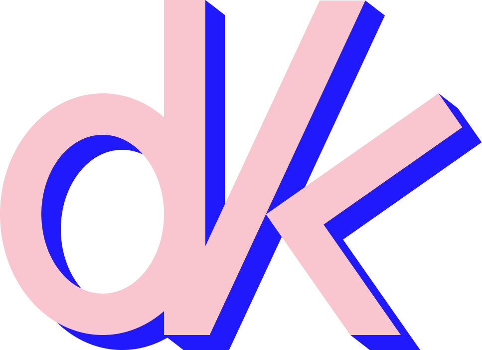

Research & insights
Marktonderzoek, stakeholdergesprekken en synthese die complexe signalen terugbrengen tot wat ertoe doet.
Karen De Visch · Gent
DeVisKar brengt menselijk gedrag, marktkennis en heldere communicatie samen. Voor organisaties die niet alleen méér willen weten, maar vooral beter willen beslissen.
Werk met KarenDe kern
Karen is bedrijfspsychologe, onderzoeker en consultant met een uitgesproken interesse in ondernemerschap, technologie en digitale cultuur. DeVisKar is sinds 2020 haar onafhankelijke plek voor onderzoek, advies en communicatie.
Waarmee DeVisKar helpt
Een flexibele combinatie van analyse, strategie en taal — afgestemd op het echte probleem.
Marktonderzoek, stakeholdergesprekken en synthese die complexe signalen terugbrengen tot wat ertoe doet.
Een scherpe externe blik op keuzes, processen en positionering — met oog voor mens én organisatie.
Heldere copy, inhoudelijke verhaallijnen en digitale communicatie die kennis begrijpelijk en bruikbaar maken.
